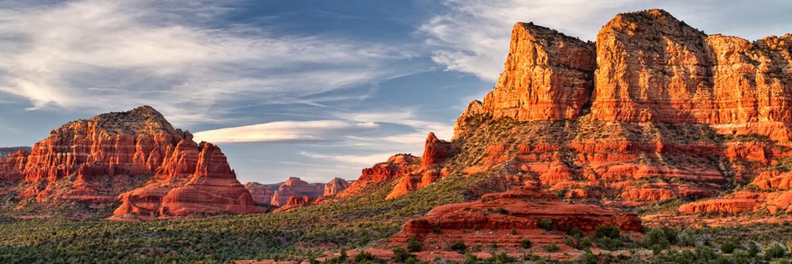
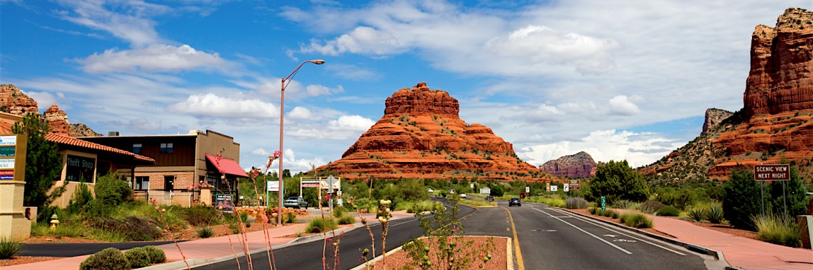
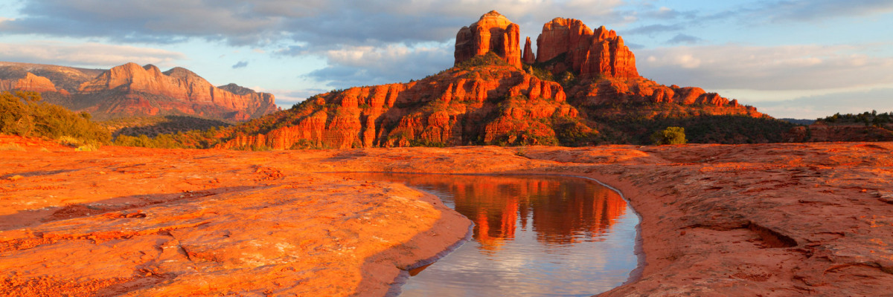
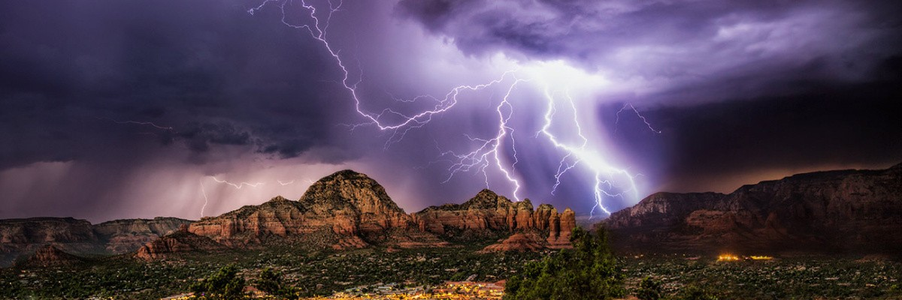

Седона (Sedona) — небольшой американский город с населением всего 10 тысяч человек, расположившийся на юго-западе плато Колорадо, чья история типична для времён освоения Дикого Запада. В 1876 году сюда, в долину Аризоны, прибыли первые поселенцы. Индейцы как могли сопротивлялись и защищали свои земли, но силы были не равны. Под натиском армии США племена были вынуждены принять предложенные условия и отправиться в резервацию в Сан-Карлос.
Но пустынная безводная земля долгое время не принимала завоевателей — в 1902 году здесь, практически в полной изоляции от центров цивилизации, проживали всего лишь около двадцати семей. Спустя несколько лет Шнебли открыл в этом месте первую почтовую станцию, назвав почтовое отделение в честь своей жены — Седона.
В 30-е годы прошлого века Седона своей внеземной красотой заслужила славу своеобразной Мекки для людей искусства, например, художника сюрреалиста Макса Ернста.
Но по-настоящему этот суровый край был преображён много позже — после второй мировой войны. Заслуга в этом принадлежит геологу из Орегона по имени Карл Е. Виллиамс. На глубине 500 футов он обнаружил большие запасы воды, которые навсегда изменили суровую Седону, позволив создать здесь настоящий оазис.
Местная энергетика обладает большой силой, она наполняет душу любовью, дарует телу отдых, освобождает разум от ненужных мыслей.
Вид плато напоминает какой-то неземной пейзаж — красные скалы, возвышающиеся на совершенно ровной поверхности, кое-где разорванной трещинами каньонов. Местные названия довольно образны: скала Колокола, скала Собора, напоминающая нерукотворный храм, воздвигнутый самой природой для поклонения высшим силам, и многие другие.
Жившие здесь индейцы считали данную территорию священным местом. Здесь проводились особые обряды, призванные наладить связь с потусторонним миром. Сегодня верования индейцев разделяются поклонниками нью-эйдж, в большом количестве приезжающими в Седону.
Пейзаж, открывающийся путешественнику, направляющемуся в Седону завораживает. Из-за высокого содержания меди в породах скалы, тянущиеся вдоль дороги практически сплошной стеной, имеют яркий красный цвет. Но в стене есть разрывы, свернув в которые вы будете вознаграждёны незабываемыми видами: ущелья и каньоны, на дне которых текут пенистые потоки. Из-за сухого климата здесь практически нет растений — только кактусы и колючки.
Седона, как и другие мистические места окутана множеством легенд. Она известна не только живописными видами американской пустыни — чего стоит только каньон Оак-Крик, но и частыми аномальными явлениями. Многие местные жители имеют опыт наблюдения НЛО. Чаще всего неопознанные летающие объекты появляются в виде светящихся шаров. Некоторые утверждают, что военные, привлечённые активностью НЛО, строят здесь секретную базу. Вообще, среди множества аномальных мест на территории США Седона является одним из самых популярных.
Даже если при посещении Седоны вам не повезёт увидеть НЛО или другое аномальное явление, всё равно вид местной природы оставит у вас незабываемое впечатление, которое можно сравнить с посещением другой планеты.
